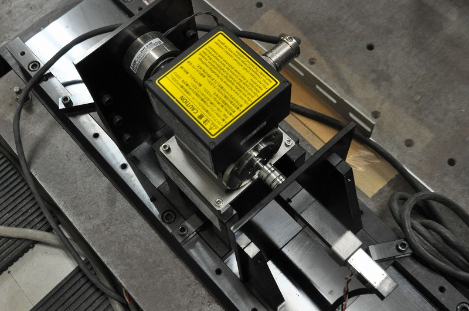

SPMSM
|  | |
AC Servo Systems Considering Voltage Saturation
AC servo systems are widely used in industrial applications and have been required to have a quick and stable response. Typically, the systems consist of plural PI regulators. However, the outputs of the PI regulators are saturated by limiter under high-speed operation and sudden acceleration operation. Then, the saturation causes a vibrational response in conventional servo systems without anti-windup control. In order to obtain high-speed and stable response even when the inverter voltage and torque current are saturated, we have proposed a servo system considering output variable saturation that is the anti-windup control, an inverter modulation scheme considering an acceleration torque and so on.
Flux-weakening Control Considering Current Differential Signal for SPM Motor
AC servo motors, which are used in industrial applications, are required to have a quick and stable response of speed and torque. In addition, if the motor is in high-speed region, flux-weakening control must be used to suppress voltage saturation. In our laboratory, we have studied about a new flux-weakening control method with smaller d-axis current, which improves the transient response. The method uses the current differential signal included a transient state motor voltage equation.
Fast and Precise Position Control using AC Servo Motor
In the field of industrial manufacturing, stepping motors are widely used for high-speed position control because they are able to achieve high-speed position control easily and inexpensively. However, with the miniaturization of semiconductor devices, more precise position control with smaller steps is required. The use of stepping motor to perform faster and more precise position control causes the motor size and cost to increase. Additionally, some of its advantages are lost. One solution is to use a surface permanent magnet synchronous motor (SPMSM) for performing high-speed position control in a cost-effective way while saving space. In our laboratory, we have studied about a fast and precise position control using AC servo motor and a control algorithm based on an angular impulse.
永久磁石同期電動機の温度推定
近年、産業用ロボットの小型化に伴い、永久磁石同期電動機(Permanent Magnet Synchronouse Motor)の小型化が求められています。 小型化したモータにより、大トルクを得る方法として電流を増加させることが挙げられます。 しかし、電流の増加によりモータ内部の温度が上昇し、永久磁石の不可逆減磁や巻線部の絶縁破壊の要因となります。 そのため、モータの温度を管理することが望まれますが、小型化したモータに温度センサを設置することは現実的ではありません。 そこで本研究室では、既存のACサーボシステムに実装可能な温度推定システムに対する研究を行っています。